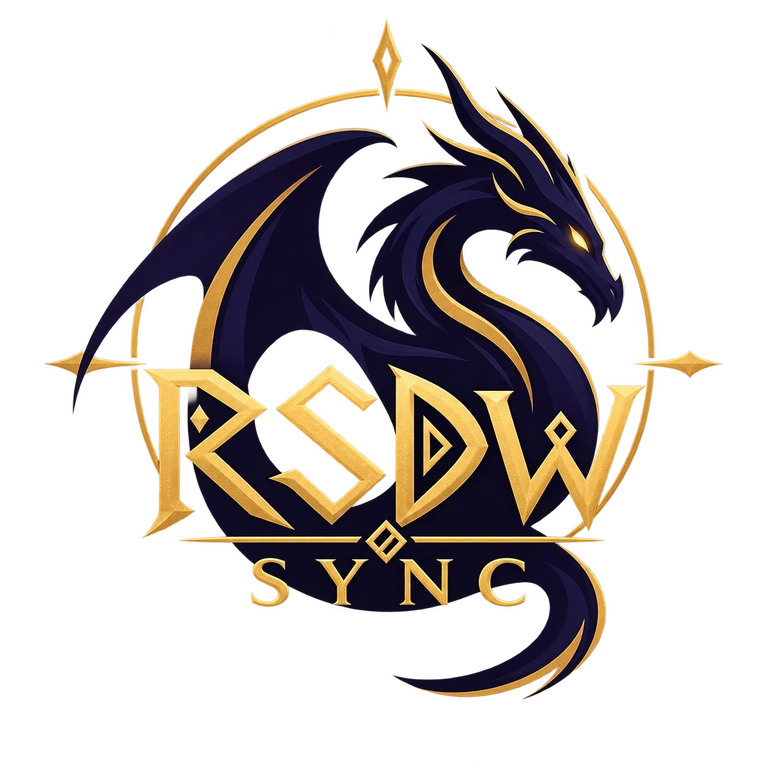

COMMUNITY-BUILT DRAGONWILDS TOOLKIT
Keep every world,
client, and mod in sync.
One focused launcher for connected Worlds, dedicated servers, mod profiles, verified synchronization, discovery, recovery, and remote administration.
CLIENT SYNCSERVER CONTROLMOD MANAGEMENTPUBLIC WORLDSQUICK + HEADLESS